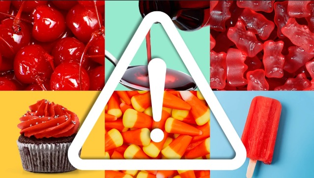
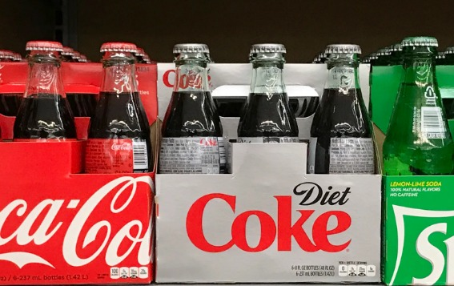

-

01
Non vegetarian Silver Leaf ?!
FSSAI has banned the use of non-vegetarian silver leaf (chandi ka vark) in Indian sweets like pethas, barfis, and kaju katlis because it is often made using animal-derived materials and can be contaminated with toxic heavy metals such as nickel, lead, and cadmium. The new regulations mandate the use of only certified vegetarian silver leaf to ensure consumer safety and prevent harmful contamination in food items.
-
02
Let's talk about MSG!
Monosodium glutamate (MSG) is a common flavor enhancer that provides a savory "umami" taste in many prepared foods. It can be hidden on labels as "hydrolyzed protein" or "autolyzed yeast extract." While the FDA deems MSG safe, its use remains controversial due to reported sensitivities. Some people experience the "MSG symptom complex," involving headaches, flushing, sweating, and chest pain, making the issue noteworthy despite ongoing medical debate. Furthermore, some research suggests a possible link between high MSG intake and metabolic issues, but this correlation requires more definitive study.
-

03
Artificial sweeteners – Not so sweet consequences
Diet sodas and “sugar-free” products often replace sugar with artificial sweeteners like aspartame, sucralose, and saccharin. These compounds provide sweetness without calories, appearing to offer a solution for weight management and blood sugar control. However, emerging research suggests potential downsides. Some studies indicate artificial sweeteners may alter gut bacteria composition, potentially affecting glucose metabolism. Other research links regular consumption with increased appetite, greater preference for sweet foods, and, paradoxically, weight gain over time. More concerning are studies suggesting possible connections to increased risks of metabolic syndrome, type 2 diabetes, and cardiovascular issues with long-term consumption.
-

04
Red Food Dye
Dye Name: Red Dye 40 (Allura Red) Common Uses: Sodas, candies, baked goods Health Concerns: Hyperactivity in children; possible carcinogen contaminants
Dye Name: Red Dye 3 (Erythrosine) Common Uses: Candies, popsicles Health Concerns: Linked to thyroid tumors in animal studies; restricted use in some countries
Dye Name: Cochineal Extract (Natural) Common Uses: Natural food coloring from insects Health Concerns: Allergic reactions; not synthetic but still causes sensitivities